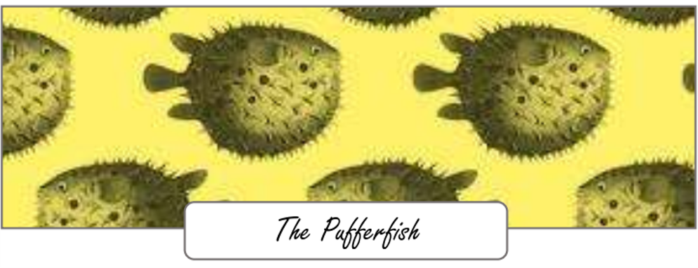

The Pufferfish group, which we affectionately call the Puffers, is the very first of the three LTS (Learn to Swim) groups that PEA runs. We chose to name the group after this iconic fish due to its unique ability to inflate itself into a ball. This connects to our main two fundamental skills that we teach in the Pufferfish Group: breath control and buoyancy.
Just as the pufferfish relies on its breath to inflate and stay buoyant in water, our Puffers learn to control their breathing to stay calm and confident in the pool. Breath control is essential for building comfort in the water, and it sets the foundation for all future swimming techniques. Through fun exercises, we teach the Puffers to take deep, steady breaths and use their breath to help them float and move efficiently in the water.
Buoyancy, the ability to stay afloat, is the second key skill in the Pufferfish Group. Much like the pufferfish uses its unique ability to adjust its shape for optimal buoyancy, our swimmers practice finding the best way to position their bodies in the water to stay afloat comfortably. We focus on building trust in the water, helping our Puffers understand how their bodies interact with the surface of the pool, and gradually introducing them to basic swimming strokes once they've mastered these foundational skills.
In the Pufferfish Group, we aim to nurture a sense of joy in the water, giving children the skills they need to move to the next stages of swimming while creating a positive and encouraging learning environment. By the end of their time in this group, the Puffers will not only have gained solid breath control and buoyancy skills but also developed a love for swimming that will stay with them for life.
Back